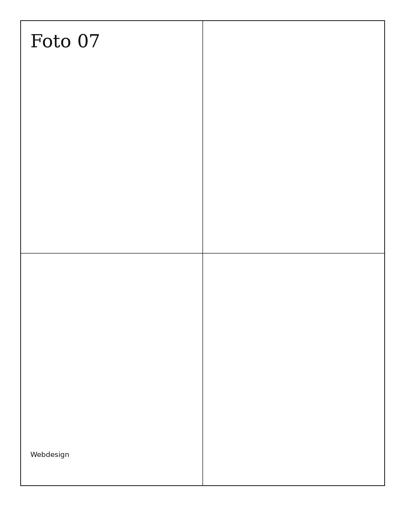

Minimal, nicht kalt.
Die Gestaltung bleibt bewusst reduziert, aber immer mit Charakter und spürbarer Qualität.
THÈA RA entwickelt Auftritte, die reduziert sind, aber niemals schwach wirken. Alles ist auf Klarheit, Präsenz und hochwertige Wirkung ausgelegt.

Die Gestaltung bleibt bewusst reduziert, aber immer mit Charakter und spürbarer Qualität.
Jede Seite ist so aufgebaut, dass sie wie eine Marke wirkt — nicht wie ein Standard-Template.
Kontrast, Proportion, Text und Bild arbeiten zusammen, damit die Seite souverän wirkt.